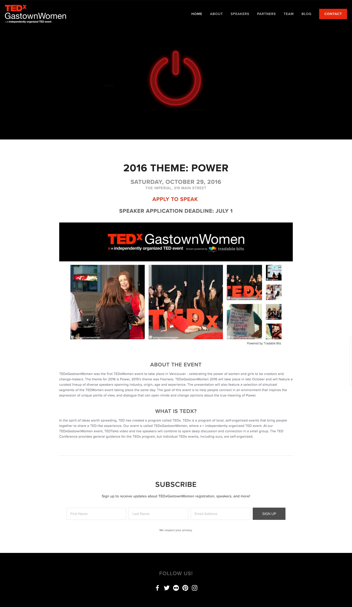

TEDxGastownWomen
Digital strategy for Vancouver's first TEDxWomen event.
At the Treefort Summit organized by the Vancouver hub of Thousand Network, I met Brittany Whitmore, who was starting a journey to bring the first TEDxWomen event to Vancouver.
I had worked on the organizing committee of TEDxCapU, Capilano University's first TEDx event, and was excited by Brittany's passion for creating an event to celebrate the power of women and girls to be creators and change-makers. I joined the TEDxGastownWomen organizing team as their Digital and Web Coordinator, putting together a clean, responsive web design and implementing it in an easy-to-use content management system using Squarespace. I worked with the social media and content strategy teams to push content to the site, and developed a blog that featured regular updates about the event and our speakers.
The TEDxGastownWomen event was a huge success, selling out in minutes and leading to a waitlist of hundreds of people excited for an opportunity to get tickets. Our speakers were top-tier, getting rave reviews and sparking interest in another event. TEDxGastownWomen is returning for a second event in October 2016, bigger and better in a significantly larger venue that will hopefully be able to accommodate the huge demand for tickets!
The Results
Take a look at the final product.
More Projects
Check out what else I've been working on.


@ParkerBusswood: Love the idea of @startupvisaca. Lower barrier to entry, bring best #tech #startups to #Vancouver, and invest in their success. /cc @bwertz